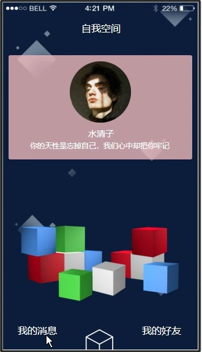
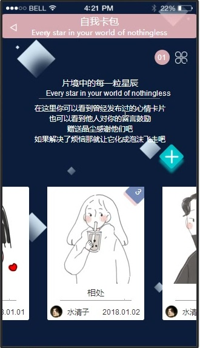
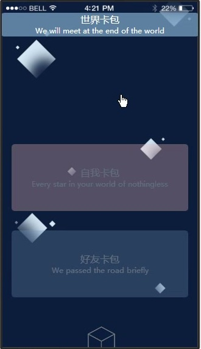
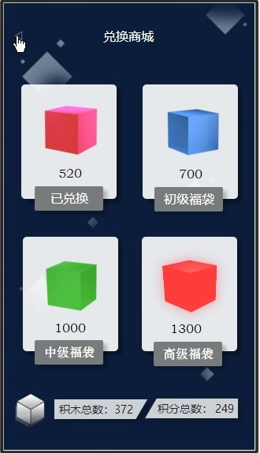

Express a feeling
A card gives a small piece of expression a visible form. Illustration, a short title, and a dated collection make individual entries easy to recognize.
See community cards →HCI & UX · Nov 2017–Jan 2018
A space to express feelings, one card at a time
I led a team designing an anonymous community app for emotional expression and connection. The project brought user research, information architecture, visual design, and filmmaking together in an Axure interaction prototype.
The concept
Cards, small geometric worlds, and moments of encouragement formed the visual language of the proposed community.
Explore the original design ↓

01 · The design question
Pian Jing explored an anonymous community for people experiencing emotional difficulties, including anxiety. The design question was how an app could make expressing a feeling and connecting with others more approachable.
That question involved more than a set of social features. It required attention to the person entering the space: what they might wish to share, how they could find a point of connection, and what kind of response the interface invited.
How could an anonymous community give someone a small, understandable way to express a feeling and receive encouragement?
As team lead and project manager, I coordinated the project while working across user research, synthesis, interface design, photography, and editing. I carried the concept through both a visual prototype and films that explained its intended experience.
02 · User research
I grouped the intended audience by age and occupation and examined habits and needs through interviews and questionnaires. This provided a research process for moving from a broad mental-health community idea toward an audience and a design brief.
These are the research activities recorded in my project documentation. Questionnaire figures describe distribution, rather than a verified number of completed responses.
I organized the material into data visualizations and a findings report, alongside a competitive analysis. XMind flowcharts and mind maps helped carry that synthesis into the structure of the app. The requirements film then gave the proposal a human context that could be discussed alongside its diagrams and screens.
03 · Research to design
The work moved through audience research, synthesis, structure, and communication. Each stage produced something the next stage could use: a clearer brief, an organized experience, or a concrete interaction to examine.
Group the intended audience by age and occupation; use interviews and questionnaires to examine habits and needs.
Audience groups, interviews & questionnaires
Organize responses, visualize the research, write a findings report, and compare existing products.
Research synthesis & competitive analysis
Use XMind flowcharts and mind maps to organize the concept, then develop wireframes and interaction states in Axure.
Flows, wireframes & interface structure
Combine interface and motion design with a filmed requirements scenario and a recorded prototype walkthrough.
Visual prototype & two project films
The surviving prototype makes the design choices tangible. The connections below describe the proposed experience and the design intention visible in the screens.
A card gives a small piece of expression a visible form. Illustration, a short title, and a dated collection make individual entries easy to recognize.
See community cards →Personal space and card-pack entry points distinguish places within the app. Messages, friends, and invitations to encourage others connect those spaces.
See the card spaces →The exchange screen proposes visible feedback through points and collectible objects. It also opens a design question about how incentives influence participation.
See feedback & rewards →04 · Visual storytelling
I used photography and editing to communicate the situation behind the app. The requirements film follows an everyday outdoor setting, phone use, and a conversation, presenting the emotional and social context of the concept.
Making the film was part of the design work: it placed an interface proposal in a recognizable situation and gave the team another way to explain whom the app was intended to serve.
05 · Interface design
I developed wireframes, interface designs, and motion effects with Axure and Photoshop, alongside object modeling and rendering in Cinema 4D. The prototype brings those disciplines together through a dark spatial setting, colored geometric objects, and illustrated cards.
Select an area to see the original screen, its role in the concept, and the corresponding moment in the walkthrough.
01 · Personal space
The personal-space screen combines a profile with a small landscape of colored cubes. Messages and friends remain accessible from the same view.
Design intention & reflectionEstablish a recognizable home within the app, alongside the shared card spaces. The geometric objects give that home a visual identity beyond a conventional profile list.
Watch this part · 2:20 →
02 · Card spaces
The “World Card Packs” screen offers separate self and friend card-pack entry points. The same diamond and cube vocabulary connects navigation to the personal-space screen.
Design intention & reflectionMake different social contexts legible before someone enters a collection. This structure explores how a person might move between personal expression and connection with others.
Watch this part · 3:35 →03 · Community cards
Illustrated mood cards form the main browsing surface. The introductory text invites people to see others’ cards, leave encouragement, and express their own feelings; a plus symbol provides an entry point for adding a card.
Design intention & reflectionUse a compact visual object to give expression a manageable form, with a clear invitation to respond. The cards carry the interaction rather than a long, undifferentiated feed.
Watch this part · 5:00 →
04 · Feedback & rewards
The exchange screen shows colored objects, point costs, an already-redeemed state, and separate point totals. It connects the app’s geometric visual world to a proposed participation mechanism.
Design intention & reflectionMake progress and available exchanges understandable. Today, I would examine whether such incentives support voluntary participation and how they affect someone’s experience of the community.
Watch this part · 1:14 →These screens are extracted from the original Axure recording. The text beside them explains the interface and design intention; it does not report a usability-test result.
06 · Interaction walkthrough
The full recording preserves the original browser-based Axure demonstration, including navigation and interaction states. Use a chapter below to jump to one of the featured areas.
07 · Outcome & reflection
The project produced research visualizations and a findings report, competitive analysis, flows and mind maps, wireframes, an interaction prototype, and two videos communicating the requirements and proposed app experience. It was a concept and prototyping project; its contribution was to make an intended experience concrete enough to examine and discuss.
Looking back, I would place greater emphasis on how people understand anonymity, choose what to disclose, and experience the reward mechanism. Those questions would guide the next round of evaluation, especially for a community dealing with sensitive feelings.
The lasting connection to my current work is attention to the person within the loop. An interface asks someone to interpret a situation and decide what to do next. That perspective continues to shape my interests in human–robot interaction: when a system should ask for input, what it can infer from a response, and how it can keep the effort of interaction manageable.